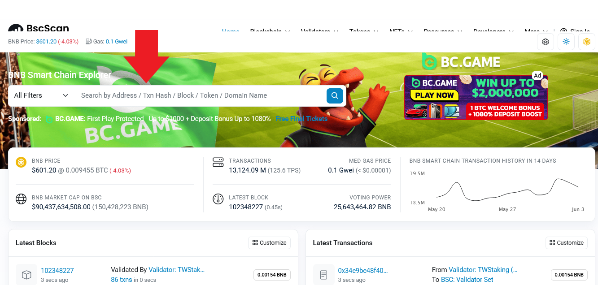
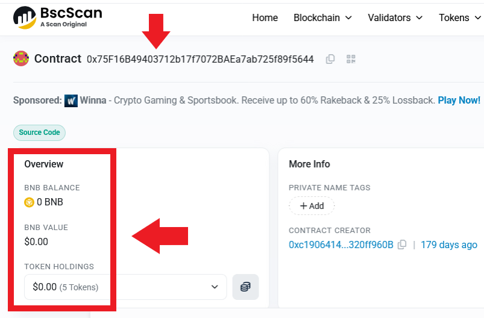
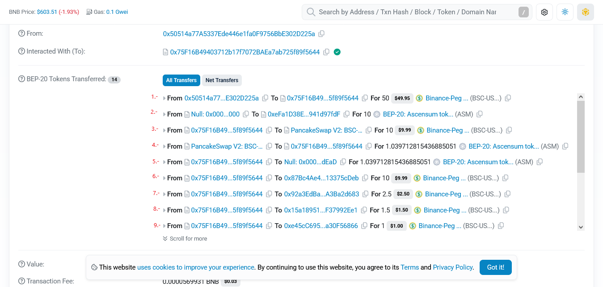

🔥 En el mundo cripto existen grandes oportunidades…
Pero también muchos riesgos.
🕵️♂️Por eso en Ascensum creemos que toda persona debería aprender a verificar por sí misma la transparencia de un proyecto antes de invertir.
🔹 Filosofía Ascensum
En Ascensum no buscamos inversores dependientes.
No creemos en la confianza ciega.
Buscamos personas que aprendan, comprendan y sepan verificar por sí mismas la transparencia de cualquier proyecto.
Creemos que la educación y la transparencia son una de las mejores herramientas para reducir riesgos en el mundo cripto.
Un inversor informado es un inversor más fuerte.
🔹 ¿Qué significa que el contrato fue renunciado?
Cuando un proyecto crea un token, el desarrollador normalmente tiene privilegios especiales sobre el contrato inteligente.
Por ejemplo, podría tener permisos para:
✔ Cambiar configuraciones importantes
✔ Modificar impuestos/comisiones
✔ Bloquear ventas
✔ Crear nuevos tokens
✔ Cambiar wallets del sistema
✔ Alterar funciones internas del contrato
Cuando el contrato es renunciado (Ownership Renounced), el creador elimina voluntariamente esos permisos administrativos.
En otras palabras:
✅ El desarrollador deja de tener control sobre el contrato.
El contrato queda funcionando de forma automática y permanente en la blockchain, sin que nadie pueda modificarlo después.
🔹 ¿Por qué eso es importante para un inversor?
Porque reduce muchísimo el riesgo de manipulación.
Un inversor sabe que:
Cuando un proyecto crea un token, el desarrollador normalmente tiene privilegios especiales sobre el contrato inteligente.
✔ Nadie podrá cambiar las reglas más adelante
✔ Nadie podrá modificar el contrato a escondidas
✔ El desarrollador ya no tiene “control absoluto”
✔ El proyecto queda más transparente y descentralizado
Eso genera más confianza.
Es una medida de seguridad y transparencia muy valorada en el mundo cripto.

🔹 ¿Qué significa que la liquidez fue quemada?
La liquidez es el dinero/token que permite que las personas puedan:
✔ Comprar
✔ Vender
✔ Intercambiar el token
Sin liquidez, un token prácticamente no puede operar.
🔹 El problema que existe en muchos proyectos
En algunos proyectos, el desarrollador puede retirar esa liquidez en cualquier momento.
Eso se conoce como:
❌ Rug Pull
Es cuando el creador vacía la liquidez y deja a los inversores atrapados sin poder vender.
🔹 ¿Qué pasa cuando la liquidez es quemada?
Cuando la liquidez es quemada (Liquidity Burned):
✅ Los tokens LP (Liquidity Provider) se envían a una wallet irrecuperable (“dead wallet”).
Eso significa que:
Nadie puede retirar esa liquidez
El desarrollador pierde acceso a ella
La liquidez queda bloqueada permanentemente
🔹 ¿Por qué eso da confianza?
Porque el inversor sabe que:
✅ El desarrollador no puede escapar con la liquidez.
Es una de las señales más importantes de compromiso a largo plazo.
Contrato Renunciado
El creador ya no puede modificar las reglas del token.
Liquidez Quemada
La liquidez quedó bloqueada permanentemente y nadie puede retirarla.
🔹 Lo importante para el inversor
Cuando un proyecto tiene:
✅ Contrato renunciado
✅ Liquidez quemada
El inversor entiende que el proyecto tomó medidas importantes para brindar transparencia y reducir riesgos típicos del mercado cripto.
🔹 Filosofía Ascensum
En Ascensum no buscamos inversores dependientes.
No creemos en la confianza ciega.
Buscamos personas que aprendan, comprendan y sepan verificar por sí mismas la transparencia de cualquier proyecto.
Creemos que la educación y la transparencia son una de las mejores herramientas para reducir riesgos en el mundo cripto.
Un inversor informado es un inversor más fuerte.
🔹 Cómo verificar un Contrato paso a paso
Este es el contrato de Ascensum DAO
0x75f16b49403712b17f7072baea7ab725f89f5644
1.- Vamos a https://bscscan.com
pega el contrato en el buscador y le das enter

2.- Podras ver que que es un contrato que no maneja dinero, es un contrato de dispersion.
Cada vez que se compra un nodo el dinero lo envia a varias billeteras:

3.- Para comprobar a que billeteras envia el dinero bajamos hasta la seccion Transactions
Ahi veremos todas las operaciones de compra de nodos que se hacen minuto a minuto.
Todo lo que dice Buy_node es una operacion por compra de Nodo
Para comprobar cuales son esas operaciones y adonde envia el dinero el contrato, da click en cualquier Hash que tienes a la izquierda de Buy_node (flecha verde)

4.- Al abrir el hash veras que el contrato realiza varias operaciones tras la venta de un nodo.
1.- Aqui vemos que la billetera 0x50514a77A5337Ede446e1fa0F9756BbE302D225a interactuo con el contrato de ascensum 0x75F16B49403712b17f7072BAEa7ab725f89f5644 para comprar un nodo, en este caso el nodo que se ha comprado es de 50 usdt.
2.- Aqui vemos que el contrato mino los 10 asm que le corresponden a esa persona por haber comprado un nodo de 50 usdt.
Esos tokens se los va a repartir dia a dia a lo largo de 360 dias.
3.- Aqui vemos que el contrato tomo el 20% de la compra del nodo (10 usdt) para interactuar con Pancakeswap comprando ASM
4.- Aqui vemos que Pancakeswap envia 1.039 ASM al contrato
5.- Aqui el contrato quema esos token ASM enviandolos a la billetera de muerte (quema)0x000000000000000000000000000000000000dEaD
Por lo tanto con el 20% de la compra de un nodo se compraron tokens ASM y se quemaron.
6.- Aqui vemos que el 20% de la venta de cada nodo se envia a la billetera del tesoro 0x87Bc4Ae48CDae1127ccF8694F245FF013375cDeb
Si das click en la direccion que terminada en cDeb te va a llevar a la direccion de fondos del tesoro para que puedas verificar el balance.
7.- A esta billetera el contrato envia el 5% del valor de cada nodo que se vende.
Es la billetera del robot de estabilizacion 0x92a3EdBa7d5D151C89F807bAbf93d25A3Ba2d683
Si das click en la direccion de la billetera te va a llevar a la direccion de fondos del robot para que puedas verificar el balance.
8.- A esta billetera el contrato envia el 3% de cada nodo y corresponde a desarrollo de ascensum
9.- A esta billetera el contrato envia el 2% de cada nodo y corresponde a Marketing de ascensum
Lo que se destina para desarrollo y marketing es el 5% de cada nodo, es lo que permite continuar ampliando el ecosistema.

🔹 Conclusión
“No pedimos confianza ciega. Te enseñamos a verificar.”
▪️ Acceso inmediato desde tu celular